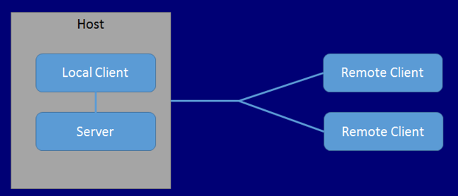

看到标题后，没接触过的朋友脑中可能会闪现出这样一个问题： UNet 是什么 ? 其实它是 Unity 5.1 版本新引入的网络系统。官方论坛里面称这个系统为 UNet, 那我们按照官方的习惯来。
官方手册文档 介绍其主要有两类功能（按 API 抽象层次来分）：
- 低层次 NetworkTransport API， 适合于用来构建更复杂高级的多人游戏或者网络基础平台
- 高层次的 High Level API， 也叫做 HLAPI，适合开发多人游戏
这篇文章将只涉及 High Level API。我们的目的是建立（Client 于 Server 间的）网络连接。
UNet 的 Server / Client / Host
在 UNet 先系统中会出现 1 个 Server 和 n 个 Client (n >= 0)。当没有专门的 Server 的时候，其中一个 Client 会充当 Server 的作用，这个即是 Client 又是 Server 的端在 UNet 中 被称为 Host。 Host 在同一个进程里面执行 Server 和 Client, 这个 Client 有个专门的名字叫做 Local Client。它跟 Local Server 之间是通过 消息队列 和 直接的函数调 用来通信的。
Unity3d 网站上有张图能比较明显的表达 Server / Client / Local Client / Host 直接的关系，让我们把它偷过来。:)

Server 创建
Unity 给我们提供了 NetworkServer 类，他的静态方法 Listen(int serverPort) 会打开一个端口监听。
示例代码如下：
NetworkServer.Listen(listenPort);
Client 创建
从前面的途中我们知道有 Local Client 和 Remote Client 之分，他们的创建方法也是不一样的。
- Local Client：使用
ClientScene.ConnectLocalServer()静态方法创建 - Remote Client：Unity 给我们提供过了 NetworkClient 类来创建。类的实例就是 Remote Client。
示例代码如下：
// Remote Client
NetworkClient client = new NetworkClient();
// Local Client
NetworkClient client = ClientScene.ConnectLocalServer();
事件注册 RegisterHandler
其实现在添加这节内容处在只是为了接下来代码答应的调试信息。NetworkServer 和 NetworkClient 类都有 RegisterHandler(short msgType, Networking.NetworkMessageDelegate handler); 方法，这个方法用来来注册对应消息的处理函数。
它有两个参数：
- 第一个参数 msgType 是个 short 类型，Unity 提供 MsgType 类来得到所有内置的数值。当然我们也可以自定义数值哦~~
- 第二个参数 handler 是 NetworkMessageDelegate 类型，类型的原型是
public delegate void NetworkMessageDelegate(Networking.NetworkMessage netMsg)。这是 C# 中的 delegate, 我们要提供的消息响应函数。
在本节例子中，我们在 Server 和 Client 端都注册 MsgType.Connect 消息，然后其响应函数为 OnConnected(NetworkMessage msg)。
private void OnConnected(NetworkMessage msg)
{
// Do someting
}
代码
对了，在提供 sample 代码之前，需要说明一下，UNet 的类和其他类型都在 UnityEngine.Networking 这个命名空间之下。
Server 端的代码：
using UnityEngine;
using UnityEngine.Networking;
public class SetupServer : MonoBehaviour
{
public int listenPort = 4444;
void Start()
{
ServerSetup();
}
private void ServerSetup()
{
NetworkServer.Listen(listenPort);
NetworkServer.RegisterHandler(MsgType.Connect, OnConnected);
}
private void OnConnected(NetworkMessage msg)
{
Debug.Log("Server: connection happen");
}
}
Client 端的代码：
using UnityEngine;
using UnityEngine.Networking;
public class SetupClient : MonoBehaviour
{
public string server = "127.0.0.1";
public int port = 4444;
public bool isLocal = false;
void Start()
{
if (isLocal)
{
LocalClientSetup();
}
else
{
ClientSetup();
}
}
private void ClientSetup()
{
NetworkClient client = new NetworkClient();
client.RegisterHandler(MsgType.Connect, OnConnected);
client.Connect(server, port);
}
private void LocalClientSetup()
{
NetworkClient client = ClientScene.ConnectLocalServer();
client.RegisterHandler(MsgType.Connect, OnConnected);
}
private void OnConnected(NetworkMessage msg)
{
Debug.Log(string.Format("Client: connected to server {0}", server));
}
}
我们把上面两个脚本都挂在 GameObject 上, 设置 SetupClient 脚本的 isLocal 字段值为 false，然后运行。输出结果为：

代码的 Github 地址 https://github.com/wudixiaop/UNet/tree/master/Assets/101%20-%20server%20and%20client 。